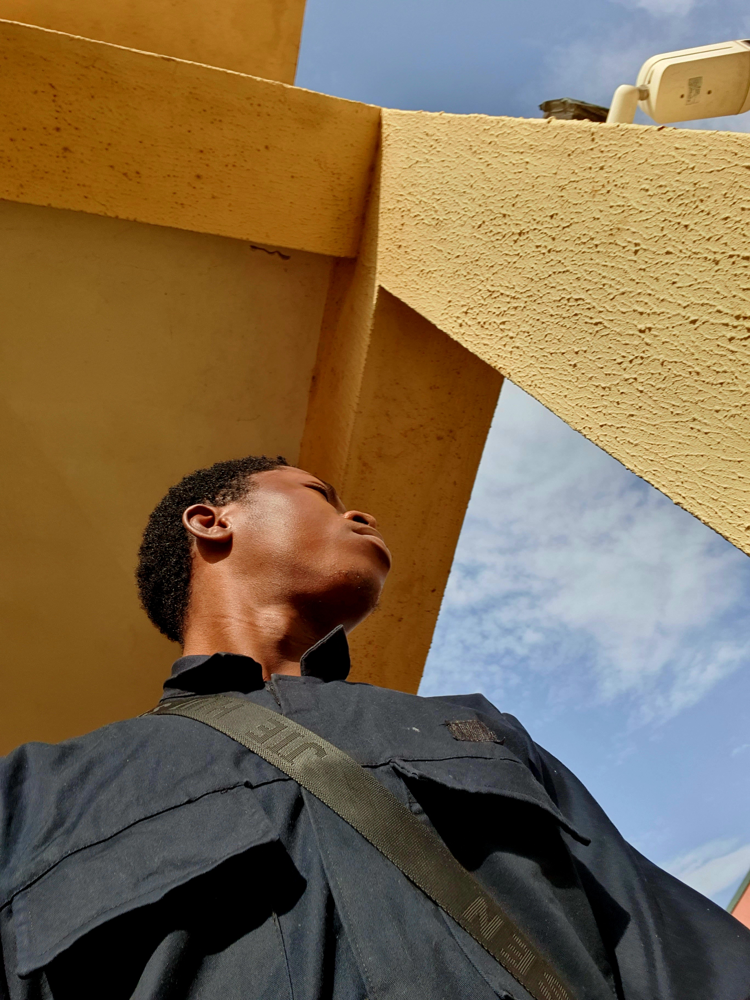

Adekanbi Adebayo is a Nigeria student with a growing passion for aerospace engineering,aircraft systems, and creative digital projects. Studying at NIGERIAN COLLEGE OF AVIATION TECHNOLOGY, ZARIA,he focuses on areassuch as aircraft design, flight mechanics,flight mechanics,and propulsion systems, with a strong interest in the world behind aviation maintenanace and modern aircraft TECHNOLOGY

Beyound engineering, Adebayo has a curious and entrepreneurial side.He has explored ideas for crowd sourced challenge platforms built around humor, unbelievable real life facts, and social interaction. His ideas often combine entertainment with discussion, aiming to create content that surprise people and sparks conversation.
Known for asking practical questions and wanting to understand how things truly work, he balances technical learning with creativity. whether discussing avionics versus airframe systems, coding in html, or preparing for future internships in aviation,he approaches learning with persistence and imagination.
At same time, his personal side shows through in moments of honesty about family, faith, and fear, especially during difficult times involving loved ones. These moments reveal someone who value connection deeply and carries both ambitiom and emotion in equal measure.
His journey is unfolding, somewhere between engineering diagrams, late night ideas, runway dreams,and the quiet hope of building something MEANINGFUL.